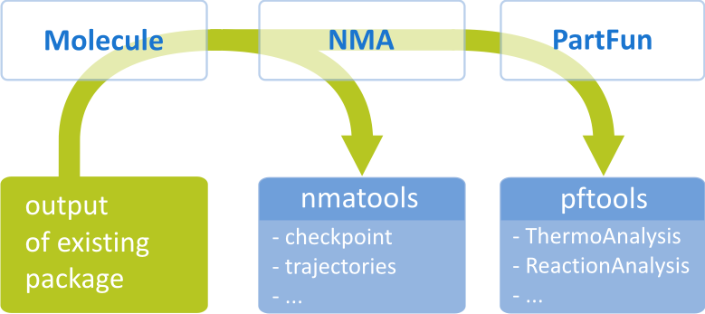

4. Getting started with TAMkin¶
4.1. Feature overview¶
TAMkin consists of three major parts visualized in the scheme below.
- Part 1 = Molecule
- A collection of IO routines read the output from several quantum chemistry
codes: CHARMM, CP2K, CPMD, GAMESS, Gaussian, QChem and VASP. All these
routines are bundled in the package
tamkin.io. The output from these codes is represented in a uniformMoleculeclass that is used by the rest of the code. - Part 2 = NMA
- Based on the data in the Molecule class, one can perform a normal mode analysis (NMA) to obtain frequencies and vibrational modes. TAMkin supports many different NMA schemes. In addition to the standard full Hessian analysis in Cartesian or internal coordinates, the methods PHVA, VSA, VSANoMass, MBH and a combination of PHVA and MBH are implemented. Tools to analyze normal modes are also included.
- Part 3 = PartFun
- Based on the vibrational analysis, one can construct a parition function that is primarily based on the harmonic oscillator approximation. However, extension are included to treat a variety of systems for which the harmonic oscillator is known to fail. From partition functions one can derive thermochemical quantities such as equilibrium constants and kinetic parameters.
4.2. TAMkin is different¶
TAMkin works differently compared to most computational chemistry software today.
Conventional computational modeling programs read their input from a simple text data file with a grammar and syntax that is defined in the documentation. Based on this input, one of the predefined routes through the program is followed and the output is written to an output file, again with a (hopefully) fixed grammar and syntax.
In our vision, this conventional approach is frustrating and hampers the creativity of the researcher. It troubles the implementation of new methods on top of existing algorithms and it disables the use of existing implementations in a different way than it was originally envisioned by the developer. TAMkin is designed to overcome these weaknesses and gives its users more power and flexibility when solving physico-chemical research questions.
The big difference is that TAMkin is a software library instead of a program. It is entirely written in Python, which makes it easy to use: one does not write an input file, but rather a tiny program in Python that passes the necessary instructions to the TAMkin library. This approach comes with several advantages:
- Simple problems are solved with a few lines of input. They require no real knowledge of the Python language. One can just copy a simple example and make some trivial modifications.
- Although the current features of TAMkin allow relatively advanced thermo-chemical computations with a few lines of input, one can always use TAMkin to do more than what we had originally in mind. One can write complex input scripts based on the TAMkin library that implement high-level logic, e.g. automatic detection of internal rotors, new algorithms for defining blocks in the MBH method, and so on.
- TAMkin is extensible. At many levels one can extend the current features of TAMkin. Possible extensions include: new tunneling corrections, new contributions to the partition function, different methods for the normal mode analysis, and so on. Each extension consists of a class defined in the input script that is compatible with the classes in the TAMkin library. Extension can be added without modifying the source code of TAMkin.
- One can combine TAMkin with all other libraries written in or ported to Python. Our favorites include MolMod, MatPlotLib and SciPy.
The TAMkin philosophy has one downside: as soon as one want to go beyond the standard functionality of TAMkin, one must get familiar with the Python language. However, learning Python is something one will never regret. Python is a great tool for many tasks in computational chemistry, also far beyond the scope of TAMkin.
4.3. Python for absolute beginners¶
If you have no Python experience yet, it may be a good time to learn the basics of the language. It may not be necessary to understand the basic TAMkin examples, but it will be beneficial in the long run.
The following slides explain Python step-by-step from the very beginning:
4.4. Basic example¶
The following script, thermo.py, is a basic TAMkin input file.
# Typical script
from tamkin import *
molecule = load_molecule_g03fchk("gaussian.fchk")
nma = NMA(molecule, ConstrainExt())
pf = PartFun(nma, [ExtTrans(), ExtRot()])
# Write some general information about the molecule
# and the partition function to a file.
pf.write_to_file("partfun.txt")
# Write an extensive overview of the thermodynamic properties to a file:
ta = ThermoAnalysis(pf, [300,400,500,600])
ta.write_to_file("thermo.csv")
The typical ingredients of a script are the following:
Load the TAMkin package:
from tamkin import *
This loads all TAMkin classes and functions, such that one can use them in the rest of the script.
Load the data:
molecule = load_molecule_g03fchk("gaussian.fchk")
The masses, coordinates, energy, gradient and Hessian are read from the file
gaussian.fchk. The data are stored in aMoleculeobject, which we give here the namemolecule.See
tamkin.data.Moleculefor a more details.Perform normal mode analysis:
nma = NMA(molecule, ConstrainExt())
The first argument provides all the input for the normal mode analysis through a molecule object. The second argument defines the variant of the normal mode analysis that is used to obtain frequencies.
If the second argument is omitted, the frequency computation is performed in 3N degrees of freedom. The
ConstrainExt()variant will perform the normal mode analysis in 3N-6 (or 3N-5) internal coordinates and leads to frequencies that are identical to those of Gaussian.See
tamkin.nma.NMAfor a more details.Construct a partition function:
pf = PartFun(nma, [ExtTrans(), ExtRot()])
A
PartFunobject is a definition of the partion function. All thermodynamic quantities are methods or attributes of the PartFun object. The translational and rotational contributions are included by adding[ExtTrans(), ExtRot()]as an argument. The vibrational and electronic contribution is included implicitely.See
tamkin.partf.PartFunfor a more details.Generate some output, e.g.
pf.write_to_file("partfun.txt")
will write the information about the partition function to a file
partfun.txt.